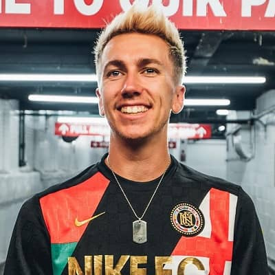
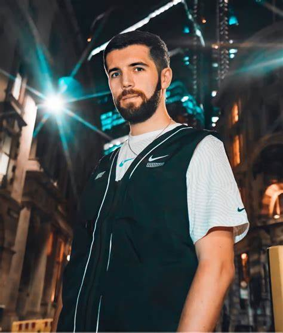
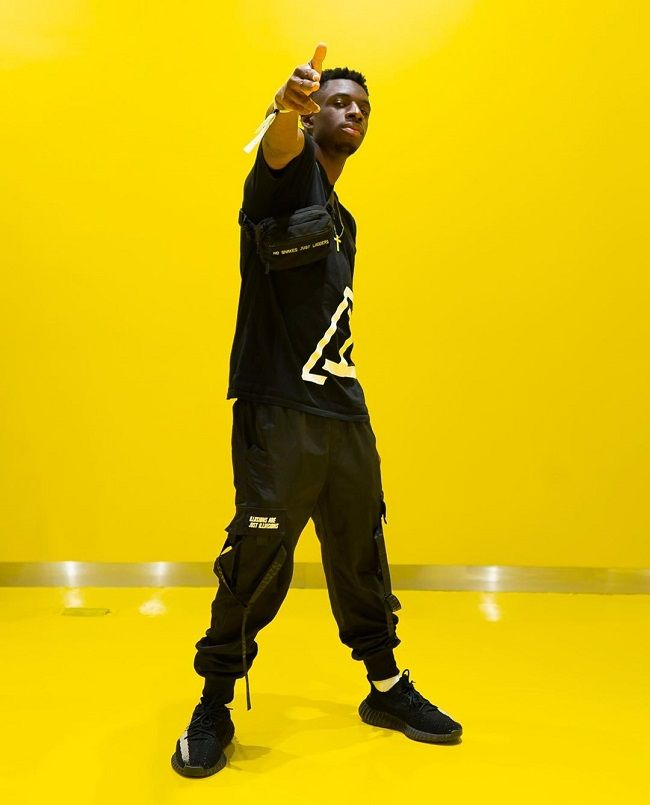

Intro
The Sidemen are a group of seven youtube that established a youtube group called The Sidemen in 2013.The groups members are JJ Olitunji.aka KSI, Simon Minter .aka Miniminter, Harry Lewis .aka Wrotetoshaw, Ethan Payne .aka Bezhinga, Josh Bradley .aka Zerkaa, Tobi Brown .aka Tbjzil and Vikkram Singh Barn .aka Vikkstar123. The group met eachother through different ways. Josh and Tobi went to grammer school together, JJ and Simon went to private school together. Then Ethan started to play Fifa pro clubs with Josh and Tobi. Then all five meet and created a GTA V group called The Ultimate Sidemen. After a while they then met Vik and Harry which were added to the GTA group and from that point on The Sidemen were created.
The Channels
The Sidemen all have there own each individual channels but they also have as a group 4 channels present on youtube. These are:
| Channels | |||
|---|---|---|---|
| Sidemen | MoreSidemen | SidemenReacts | SidemenShorts |
| Current Subscribers: 16.8M | Current Subscribers: 6.88M | Current Subscribers: 4.77M | Current Subscribers: 1.8M |
| Video Count: | Video Count: | Video Count: | Video Count: |
| Growth This Month: 400,000k | Growth This Month: 130,000k | Growth This Month: 160,000k | Growth This Month: 60,000k |
The Sidemen channel was created on the 14th of June 2015 and there first video was an intro welcome to the channel. On the channel they average from 80 to 140 million views a month. This channel is the most successful channel of the groups which yearly earns them about 5.2 million euro a year.
Due to the success of the Sidemen channel, the group created the MoreSidemen channel on the 1st of Feburary 2018. This happenend the exact time the the Sidemen channel was starting to grow rapidly.The channel is now averaging from 52 to 100 million views monthly. As the Sidemens second most subbed channel, there yearly earnings on this channel are about 3 million euro a year.
Due to covid hitting the world and becoming a global pandemic in 2020, the Sidemen decide to keep up with the demand of entertainment from them and also another spike of growth in there channels, they decide to create the sidemen reacts channel on the 6th of August 2020. This channel averages 70 to 110 million views monthly.This channel grow rapidly and surpassed there second channel in earnings and now earns them about 3.3 million a year.
To follow up the boom of TikTok the Sidemen created one more channel called SidemenShorts. This channel now averages from 60 to 90 million views a month. This channel now earns about 2.4 million euro a year which is the least there earning from there channels but this brings in alot of views and money.
The Individuals
JJ Olatunji
Youtube
JJ Olatunji was born on the 19 June 1993.He lived in Watford, Hertfordshire. JJ started his youtube career in 2009 by making videos of playing Fifa and playing horror games with his brother Deji in his room in his parents house. This then expanded into making vlogs out in public and also doing skits with his friends and family. Then in 2013 with the other members of the Sidemen started creating Sidemen content on GTA V in 2013. Going into this he was one of the popular and most watched youtubers in the UK which hepled the group bring in a big audience from the start.
In 2015, a biography was published which was called "KSI: I am a Bellend". This book was released on the 24th September 2015 and five days later in the states. Then in 2016, KSI with the rest of the Sidemen published The Sidemen Book, which sold 26,436 copies and became a best seller. In 2017, KSI "left" the Sidemen which started a beef between him and the rest of the group which created one of the most iconic era in UK youtube history which was the disstrack era. This created alot of views for the group and other people who got involved but also was the start and the makings of his music career. JJ now is part of multiple youtube channels such as:
- KSI
- JJ Olatunji
- KSIClips
- Sidemen
- MoreSidemen
- Sidemenreacts
- SidemenShorts
Music
On the 23 March 2015, KSI released his debut single, "lamborghini". The song charted at number 30 on the UK Charts. He released his first ep called "Keep Up" on the 8th of Janurary 2016. In 2017, during the time of the disstracks, KSI released multiple disstracks against Bezhinga but the biggest ones against Wrotetoshaw with the biggest being called "Little Boy" which now has 65 million views on Youtube.
In 2019 he really started to grow into a artist when he signed for a new record label call RBC Records. This lead to the release of his first studio album which was called "Dissimulation", which include some songs like "Killa Killa", "Houdini" and "Wake Up Call". In 2020, he released his new single called, "Really Love" with a big name in the music industry called Craig David, and then also released "Dont Play", with popular artist Anne Marie. On the 26 April 2021, he released his second album called "All Over The Place". This album became his first number 1 in music where it topped the charts in the UK.
Boxing
On the 3rd of Feburary 2018, KSI had his first amateur boxing match against fellow youtuber Jow Weller which took place at the Copper Box Arena in London. KSI won via TKO in the 2nd minute of the 3rd round. Which then after the fight KSi proceded to call out Jake Paul and Logan Paul.
On the 24th of Feburary, KSI would fight Logan Paul in England. This would be his last amateur fight. The fight went to a majority draw in which all judges scored the fight at 57-57. The second installment of this fight would happen in America, in the Staples Center on the 9 of November 2019. This would be the pairs first Professional boxing fight. The fight would go the full lenght in which KSI would win in split decision, scored at 56-55, 57-54 and 56-55 in favour of KSI.
On the 27 of August 2022, KSI hosted an boxing event with Misfits and DAZN in which he would be the headline fight but in 1 night he would fight 2 opponents. His first opponent would be Swarmz. Swarmz is a rapper who would fight his first professional fight that night which he would go on to lose via KO in round 2. KSI's second opponent was Alcaraz Pineda. Pineda going into the fight had a record of 2-4-0. He would then go on the lose by KO in the 3rd round.
Prime Hydration
In 2022, KSI and Logan Paul on a shared Instagram Live would go on and announce a new drink called Prime Hydration which they are co owners of. The drink would go on to be solded in 1000s of stores across the United States and the UK in the months following. Most noteable, on the 28 of July 2022 Prime Hydration announced they would become the offical hydration partner of Arsenal F.C..
Simon Minter
Youtube
Simon Minter was born on the 7 of September 1992. Simon created his youtube channel called Miniminter in 2008 but didn't upload his first video till December 2012. Before this time, Simon was a camera man for KSI but was also a close friend due to growing up together in school. Miniminter's channel from the started consisted of Fifa gameplay, football challenges (crossbar challenge), vlogs and random challenges with other members of The Sidemen and within the close friend group such as Randolph, Callux, Calfreezy and JME.
In September 2013, Simon created a second channel called "MM7 Games". This channel would contain random content in it such as random games with Zerkaa, Dead by Daylight gameplay, Custom Black Ops 3 zombies maps and much more. This channel would end up having thousands of videos on it with a pletra of games and challenges on it.
In 2018, Simon and close friend Randolph would go on to create a podcast which is uploaded on weekly called "The What's Good Podcast". On this podcast they talk about current events going on in the world, about The Sidemen channel, the groups stories and antics and also they bring on guests to talk to them about there life and relevent topics around them. Simon now is part of multiple youtube channels such as:
- Miniminter
- MM7 Games
- MiniminterClips
- MiniminterShorts
- What's Good Podcast
- Sidemen
- MoreSidemen
- SidemenReacts
- SidemenShorts
Music Carrer
In 2017, when the Sidemen diistracks era started, Simon wrote and preformed a disstrack on KSI's brother Deji. This video would go on to have 68 million views on youtube. In May 2018, Simon would release his first song called "Fiver". In 2020, Simon would collaborate with Randolph and release two songs together called, "Survive The Night" and "The Helium Song". These would be go on to have 3 million and 5.3 million.
Harry Lewis
Youtube
Harry Lewis was born on the 24 of Novemeber 1996. Harry created his youtube channel called Wroetoshaw in 2014. On Harry's channel, he mostly produced either Fifa gameplay videos, Fifa challenge videos, football videos with his family or The Sidemen and wider group and random videos with The Sidemen. In April 2017, the "Wroetoshaw" hit 10 million subscribers which means Harry got a "Diamond Play Button" off of Youtube. In 2014 he would also join and become a permament member of The Sidemen group. This meant we would move from a small island off the coast of England called Guernsey to London to make weekly content with The Sidemen and the wider group of friends. Harry now is part of multiple youtube channels such as:
- W2S
- W2S Plays
- W2SClips
- Sidemen
- MoreSidemen
- SidemenReacts
- SidemenShorts
Ethan Payne
Youtube
Ethan Payne was born on the 20 of June 1995. Ethan created his youtube channel "Bezhinga" on the 24 of Feburary 2012. For the first few years ethan only uploaded Fifa gameplay videos and Call of Duty videos on the Behzinga channel. After a while, he started to post vlogs, comedy skits, fitness videos and random videos with other members of The Sidemen. Ethan made a series on his youtube channel of his fitness journey so he could show other people that anbody can lose a big amount of weight if they work on themselves.
In 2013 he became one of the founding members of The Sidemen and created The Sidemen logo. He would then eventually become the 31st most influential online creator in the UK in 2019. In 2020, Ethan starred in a three episode documentary series on Youtube Originals called "How to Be Behzinga". This documentry was about his strugle with depression and his path towards running the London Marathon to raise money for Teenage Cancer Trust. He also revealed that he had been suffering with alcoholism and that previously he had taughts on suicide.He became an advocate for mental health but especially young people's mental health. Ethan now is part of multiple youtube channels such as:
- Behzinga
- Beh2inga
- Behzinga Shorts
- Sidemen
- MoreSidemen
- SidemenReacts
- SidemenShorts
Josh Bradley
Youtube
Josh Bradley was born on the 4 of September 1992. In 2009, Josh created his youtube channel "Zerkaa". On this channel he produced Call of Duty gameplay videos and Fifa gameplay videos. Josh was one of the first generation to use youtube as a platform to grow an audience and to see how far he could go. In 2013, along with KSI, Miniminter and Behzinga, he became a co-founder of The Sidemen. Josh now is part of multiple youtube channels such as:
- Zerkaa
- ZerkaaPlays
- ZerkaaCLips
- ZerkaaShorts
- Sidemen
- MoreSidemen
- SidemenReacts
- SidemenShorts
Twitch
In 2020, Josh joined Twitch so he could stream games and content out live to his audience and to interact more with his audience. He would play alot of games live on stream such as Fifa and Call of Duty, but in 2021 Josh really took off when he joined a server to participate in GTA V roleplay. This server is called the NoPixel Server. On this server, Josh plays a character called Tommy Tate .aka Tommy T.
Josh would stream nearly every night for a consective two years which would cause his streams and views to boom. Within the server and the role he plays, he came across a group of people called "The Mandem" which was a gang in the game from Britian. He would join the gang and grow his character with these other characters. This would help Josh break all of his previous records of paid subs in a month, most people in a stream, and most views in a month.
ZRK
ZRK or ZRKLDN is a clothing brand co-founded by Josh Bradley and Lewis Redman on the 5th April 2017. ZRK is a streetwear brand that sells pants, joggers, shorts, tops, jumpers, hoodies, hats and socks. Josh has a very buisness mind and keeps the business well run and employs the right people to work for and in the company.
Tobi Brown
Youtube
Tobi Brown was born on the 8 of April 1993. In 2011, Tobi created his youtube channel "TBJZL" On this channel, tobi started by posting up Fifa gameplay videos and NBA 2K gameplay videos. He would also post up challenges with other members of The Sidemen, vlogs, skits and videos with friends and his brothers Manny and Jed. In September 2019, he was listed as the 38th most influential online creator in the UK. Tobi now is part of multiple youtube channels such as:
- TBJZL
- TBJZLPlays
- TBJZLClips
- Sidemen
- MoreSidemen
- SidemenReacts
- SidemenShorts
ILLVZN
In June 2018, Tobi founded along with his brother Manny a streetwear brand called ILLVZN which offically launched in Feburary 2019. Here they sell hats, jackets different types of pants, jumpers, socks and much other items. He is involved deeply in the projects within the brand and has helped it grow rapidly. In May 2019, the brand collaborated with "New Era Cap" to release a custom ILLVZN x New Era Cap 9Fifty snapback cap.
Music Carrer
Tobi released his debut single with his brother MAnny and sister Janelle on the 7 of Feburary 2020. This was called, "Destined for Greatness". The song charted on the UK charts placing 31st which was his first top 40. He then featured in a remix for KSI in his song called "Wake Up Call". This was alongside rapper Trippie Redd and P Money. This version released on the 6 of March 2020. Then on the 20 August 2021, Tobi would release his second single called "Rhythm & Vibes" with his brother Manny.
Vikram Singh Barn
Youtube
Vikram Singh Barn was born on the 2 of August 1995. Vik joined youtube in 2010 by creating his youtube channel "Vikkstar123". On the topic of starting up youtube Vik said:
I got involved thinking I might be able to do a little bit better than they were doing, and get involved and have some fun with it. I started recording myself playing Call of Duty: Modern Warfare 2. I started making tutorial videos that people could watch – some of them were for knives and how you could throw them across the map. I made videos showing places where you could throw a knife or tomahawk and get a kill. I thought it would be cool to show off these ridiculous kills.
On his channel at first he started by posting Call of Duty montages and then went on and moved to Minecraft. In 2013, Vik joined the rest of The Sidemen in GTA V and started to make a series with The Sidemen on GTA. The series consists of over 700 episodes.
During the first locked in 2020 when Covid 19 was rampant, Vik came back into the highlight of the Call of Duty scene through the release of Call of Duty: Warzone. For nearly a year and a half, Vik streamed on youtube mostly every night for up to eight hours and in this time win three tournaments. Vik now is part of multiple youtube channels such as:
- Vikkstar123
- Vikkstar123HD
- VikkstarPlays
- VikkstarShorts
- Sidemen
- MoreSidemen
- SidemenReacts
- SidemenShorts
London Royal Ravens
In 2020, Vik became a part owner of an esports team called London Royal Ravens. This esports team are involved in the Call of Duty League.
- Call of Duty League
- This is a competition where esports teams from across the world compete in a 5v5 style mode on the current Call of Duty game. It is done in a league format which then goes to finals weekend. Finals weekend is where the top 4 teams comepete in a best of 7 series which leads to the loser being knocked out and winner goes through to the final.